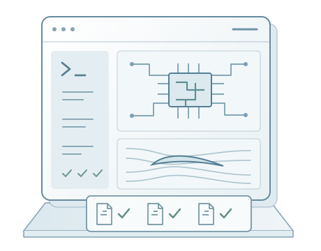

Sage-A1.5 / RESEARCH WORKFLOWS
Scientific Co-working
Real-World and
Professional Workflows
Follow the agent from task requirements through tool use and verification to results you can inspect.

TEN CASES / ONE COLLECTION
Choose an investigation.
Explore the process.
Inspect what it produced.
This study is outside the current collection. Explore the ten cases here.
RECORDED WORKFLOW
Preparing the workspace
01 / 05
EXPLORING
Edited walkthrough of a recorded run. Animation time is compressed.
THE RECORDED RESULT
About this case Background, approach and deliverables
Task background
Approach
CONTINUE EXPLORING